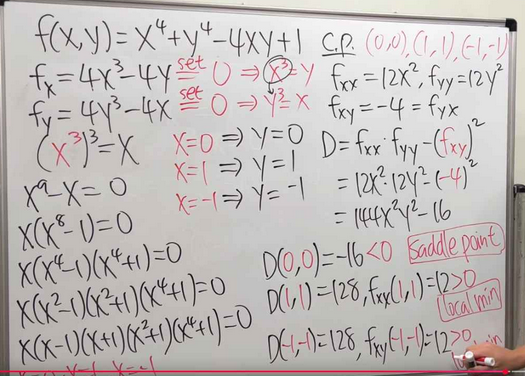
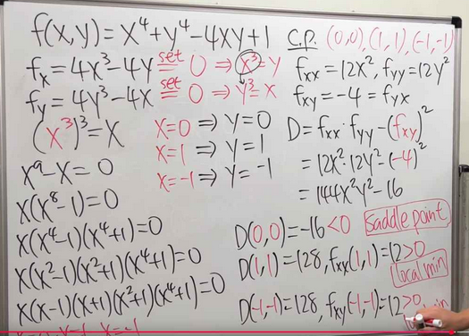

In-Depth Analysis of $f(x, y) = x^5 + xy^2 - 5x$
Part a) Finding Critical Points
Extensive Explanation
A critical point of a multivariable function is a point where the surface is "flat," meaning a tangent plane at that point would be perfectly horizontal. Mathematically, this occurs where the gradient vector, $\nabla f = \left( \frac{\partial f}{\partial x}, \frac{\partial f}{\partial y} \right)$, is the zero vector. We must therefore find all points $(x, y)$ that satisfy both partial derivative equations simultaneously.
Step 1: Compute the Partial Derivatives
We differentiate $f(x, y) = x^5 + xy^2 - 5x$ with respect to each variable independently.
Derivative with respect to $x$ (treating $y$ as a constant):
$$ \frac{\partial f}{\partial x} = \frac{\partial}{\partial x}(x^5) + \frac{\partial}{\partial x}(xy^2) - \frac{\partial}{\partial x}(5x) = 5x^4 + y^2 - 5 $$Derivative with respect to $y$ (treating $x$ as a constant):
$$ \frac{\partial f}{\partial y} = \frac{\partial}{\partial y}(x^5) + \frac{\partial}{\partial y}(xy^2) - \frac{\partial}{\partial y}(5x) = 0 + 2xy - 0 = 2xy $$Step 2: Solve the System of Equations
We set both derivatives to zero to find the points where the gradient is $\vec{0}$.
$$ 5x^4 + y^2 - 5 = 0 \quad \text{(1)} $$ $$ 2xy = 0 \quad \text{(2)} $$Equation (2) is the key. For $2xy=0$, it must be that either $x=0$ or $y=0$. We analyze these two cases separately.
- Case 1: Assume $x = 0$.
We substitute this into Equation (1): $$ 5(0)^4 + y^2 - 5 = 0 \implies y^2 = 5 \implies y = \pm\sqrt{5} $$ This gives us two critical points: $(0, \sqrt{5})$ and $(0, -\sqrt{5})$. - Case 2: Assume $y = 0$.
We substitute this into Equation (1): $$ 5x^4 + (0)^2 - 5 = 0 \implies 5x^4 = 5 \implies x^4 = 1 \implies x = \pm 1 $$ This gives us two more critical points: $(1, 0)$ and $(-1, 0)$.
Conclusion for Part (a): The four critical points of the function are $(1, 0)$, $(-1, 0)$, $(0, \sqrt{5})$, and $(0, -\sqrt{5})$.
Part b) Equation of the Tangent Plane
Extensive Explanation
The tangent plane is a flat surface that "just touches" the 3D graph of a function at a single point. It's the 3D equivalent of a tangent line. The formula is a natural extension of the point-slope form of a line:
$$ z - z_0 = f_x(x_0, y_0)(x - x_0) + f_y(x_0, y_0)(y - y_0) $$Here, $(x_0, y_0, z_0)$ is the point of tangency, and the partial derivatives $f_x$ and $f_y$ give the slopes of the plane in the x and y directions, respectively.
Step 1: Identify the Point of Tangency $(x_0, y_0, z_0)$
We are given $(x_0, y_0) = (1, 1)$. We find $z_0$ by plugging this into the function:
$$ z_0 = f(1, 1) = (1)^5 + (1)(1)^2 - 5(1) = 1 + 1 - 5 = -3 $$ So, the point is $(1, 1, -3)$.Step 2: Calculate the Slopes at the Point
We evaluate the partial derivatives (from Part a) at $(1, 1)$:
$$ f_x(1, 1) = 5(1)^4 + (1)^2 - 5 = 1 $$ $$ f_y(1, 1) = 2(1)(1) = 2 $$Step 3: Assemble the Equation
Plug all the components into the tangent plane formula:
$$ z - (-3) = 1(x - 1) + 2(y - 1) $$Simplifying this gives the final equation:
$$ z + 3 = x - 1 + 2y - 2 \implies z = x + 2y - 6 $$Conclusion for Part (b): The equation of the tangent plane is $z = x + 2y - 6$.
Part c) Classifying Critical Points
The Theory: An Extensive Dive into the Second Derivative Test
Once we find a "flat spot" (a critical point), we need to determine its nature. Is it the bottom of a valley (local minimum), the top of a hill (local maximum), or a Pringles-like shape (saddle point)? In single-variable calculus, the sign of the second derivative, $f''(x)$, tells us this. In 3D, we need a more powerful tool.
1. The Hessian Matrix: Capturing 3D Curvature
The **Hessian matrix** is a matrix of all the second-order partial derivatives. It captures how the slopes are changing in every direction.
$$ H_f = \begin{bmatrix} f_{xx} & f_{xy} \\ f_{yx} & f_{yy} \end{bmatrix} $$- $f_{xx} = \frac{\partial^2 f}{\partial x^2}$: Measures the concavity in the pure x-direction. A positive value means it curves up (like a smile) along the x-axis.
- $f_{yy} = \frac{\partial^2 f}{\partial y^2}$: Measures the concavity in the pure y-direction.
- $f_{xy} = f_{yx}$: Measures the "twist" or "warp" of the surface. It tells us how the slope in the x-direction changes as we move in the y-direction.
2. The Discriminant: The Deciding Factor
The **discriminant**, $D$, is the determinant of the Hessian matrix. It cleverly combines all the curvature information into a single number.
$$ D = \det(H_f) = f_{xx}f_{yy} - (f_{xy})^2 $$Think of $D$ as a battle between pure curvature ($f_{xx}f_{yy}$) and the twist ($(f_{xy})^2$):
- If $D > 0$: The pure-axis curvature ($f_{xx}f_{yy}$) dominates the twist. The surface has the same type of curvature in all directions (either all up or all down). This results in a local minimum or maximum. We then check the sign of $f_{xx}$ to see which it is.
- If $D < 0$: The twist term ($(f_{xy})^2$) dominates. This means the surface is curving up in one direction and down in another. This is the definition of a saddle point.
- If $D = 0$: The test is inconclusive. The curvature and twist effects are perfectly balanced, and we can't draw a conclusion from this test alone.
Application to $f(x, y) = x^5 + xy^2 - 5x$
Step 1: Calculate the Second Partial Derivatives
$$ f_{xx} = \frac{\partial}{\partial x}(5x^4 + y^2 - 5) = 20x^3 $$ $$ f_{yy} = \frac{\partial}{\partial y}(2xy) = 2x $$ $$ f_{xy} = \frac{\partial}{\partial y}(5x^4 + y^2 - 5) = 2y $$Step 2: Formulate the Discriminant
$$ D(x,y) = (20x^3)(2x) - (2y)^2 = 40x^4 - 4y^2 $$Step 3: Analyze Each Critical Point
| Critical Point $(x,y)$ | $f_{xx} = 20x^3$ | $D = 40x^4 - 4y^2$ | Analysis | Classification |
|---|---|---|---|---|
| $(1, 0)$ | $20(1)^3 = 20$ | $40(1)^4 - 4(0)^2 = 40$ | $D > 0$ and $f_{xx} > 0$ | Local Minimum |
| $(-1, 0)$ | $20(-1)^3 = -20$ | $40(-1)^4 - 4(0)^2 = 40$ | $D > 0$ and $f_{xx} < 0$ | Local Maximum |
| $(0, \sqrt{5})$ | $20(0)^3 = 0$ | $40(0)^4 - 4(\sqrt{5})^2 = -20$ | $D < 0$ | Saddle Point |
| $(0, -\sqrt{5})$ | $20(0)^3 = 0$ | $40(0)^4 - 4(-\sqrt{5})^2 = -20$ | $D < 0$ | Saddle Point |
Interactive Visualization: See the Results
The interactive 3D plot below confirms our findings. You can rotate and zoom to inspect the surface's shape at each labeled critical point.
Step 4: Global vs. Local Analysis
A "local" extremum is just a hill or valley in its immediate neighborhood. A "global" extremum is the absolute highest or lowest point on the entire surface. To check for global extrema, we must see what the function does as its inputs get very large.
Consider the function's behavior along the x-axis (where $y=0$):
$$ f(x, 0) = x^5 - 5x $$ As we let $x$ grow infinitely large or small: $$ \lim_{x \to \infty} (x^5 - 5x) = +\infty $$ $$ \lim_{x \to -\infty} (x^5 - 5x) = -\infty $$Conclusion for Part (c): Since the function goes to both positive and negative infinity, it is unbounded. Therefore, it has no global maximum or global minimum. The extrema we found at $(1,0)$ and $(-1,0)$ are strictly local.
Click to see relevant problem images
 
